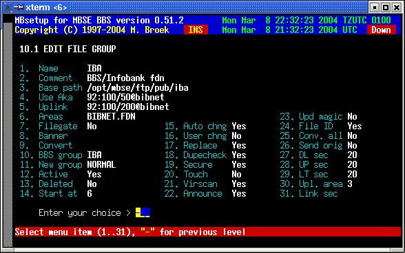

Last update 08-Mar-2003
MBSE BBS Setup - File Echo's Setup - File Groups.
Introduction.
File echo groups are to logically divide your file echo's for different file distribution networks. This screen also has a lot of fields that are needed for the auto area create. When a new area is created a bbs download area is made and a new tic area record is made. It makes sense to select the groups by uplink and area file that is available for that file distribution network. By doing that downlinks can connect areas that are not yet connected at your bbs but are available from your uplink. If you are connected to the filegate then there is one area file for all distribution groups. You must then create a file group for each distribution group, ie. Fidonet, SDS etc. The name of that group must exactly match the comment field in the group in this setup.
File Group Setup.
Name File Echo Group name. Comment The description of that group. Base path The base path for new created areas. Active If this group is active. Use Aka The Fidonet aka to use for this group Uplink The Fidonet aka of the uplink. Areas The name of the areas file (in ~/var/arealists). Filegate Is area file in filegate.zxx format or not. Banner Banner file to add to archives. Convert Archiver to convert archive to. BBS group BBS group name. New group New files announce group. Active If this group is active. Deleted If this group must be deleted. Start at New created areas must start at area nr. Auto chng Auto change when running mbfido areas User chng Auto create areas on downlinks requests. Replace Set replace option in new areas. Dupecheck Set Dupecheck option in new areas. Secure Set secure option in new areas. Touch Set Touch filedate option in new areas. Virscan Set virus scanner option in new areas. Announce Set announce files option in new areas. Upd magic Set update magicname option in new areas. File ID Set File ID option in new areas. Conv. all Set convert all option in new areas. Send orig Set send original option in new areas. DL sec Set download security in new areas. UP sec Set upload security in new areas. LT sec Set list security in new areas. Upl. area Set upload area number in new areas. Link sec Set link security to copy to new areas.

 Back to File Echo's Setup
Back to File Echo's Setup